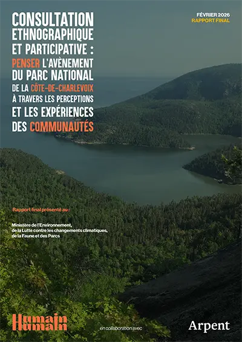
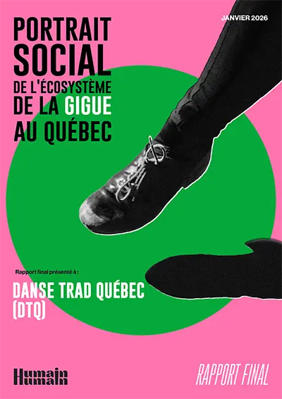
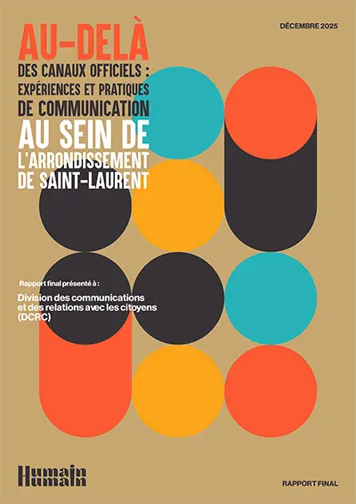
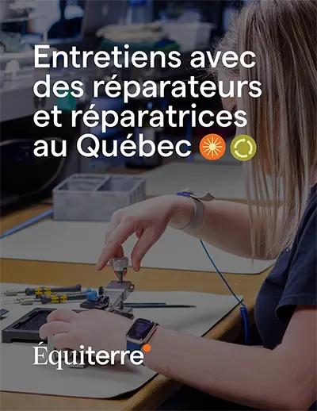
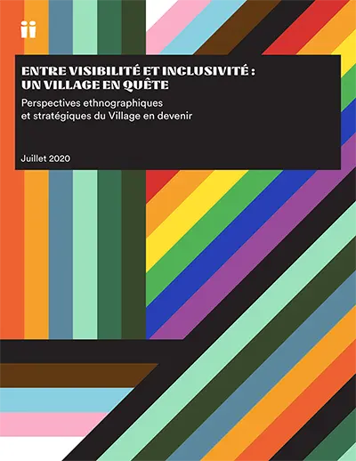

Télécharger le rapportConsultation ethnographique et participative parc national de la Côte-de-Charlevoix (2026)
Médias
- Une anthropologue en mission dans Charlevoix
(décembre 2024, La Presse) - Parc de la Côte-de-Charlevoix: 3 collectivités, 3 réalités
(avril 2026, Le Charlevoisien) - Le parc de la Côte-de-Charlevoix vu par ceux qui l’habiteront
(avril 2026, Le Charlevoisien) - Parc de la Côte-de-Charlevoix : « je n’ai jamais vu un attachement au territoire aussi frappant »
(mai 2026, CIHO FM Charlevoix) - Entrevue et reportage
(mai 2026, TVA-CIMT) - Le GRAP (BSC) qui relance ses activités suite à la consultation ethnographique
(juin 2026, Le Charlevoisien)

Télécharger le rapportPortrait social de l’écosystème de la gigue au Québec (2026)
Médias
- La gigue : importante, mais stigmatisée
(février 2026, Radio-Canada)

Télécharger le rapportPratiques informationnelles et besoins en matière de communication de l’arrondissement de Saint-Laurent (2025)

Télécharger le rapportÉtude sur l'accès à la réparation : portrait de la réalité québécoise (2022)
Médias
- Moins de 20% des Canadiens réparent leurs appareils électroniques brisés
(octobre 2022, Le Devoir) - Dévoilement de la première étude pancanadienne sur l’accès à la réparation
(octobre 2022, Équiterre)

Télécharger le rapportPortrait ethnographique du Village 2SLGBTQ+ de Montréal (2020)
Médias
- La SDC du Village de Montréal souhaite se transformer
(octobre 2020, Le journal Métro) - Le Village de Montréal veut se refaire une beauté
(octobre 2020, TVA Nouvelles)